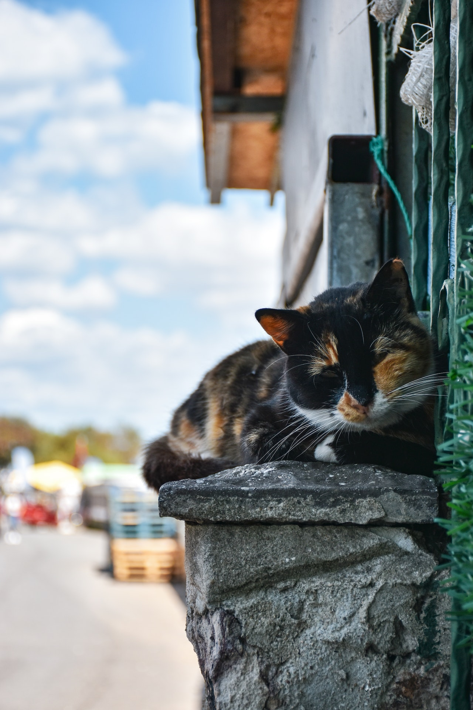

WDV 321 - Advanced JavaScript
Assignment 5-1 Home Page
Assignment 6-1 Send to Local Storage
The above button will create a JavaScript object and send it to storage. If successful, the results will display on the about page.
The above button will create a JavaScript object and send it to storage. If successful, the results will display on the about page.